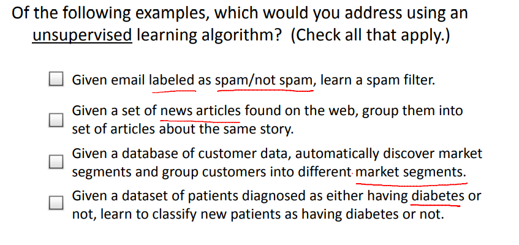

吴恩达机器学习笔记1: 何为机器学习
机器学习是目前信息技术中最激动人心的方向之一，本文为学习吴恩达的机器学习课程后所做的笔记。
1 前言
在我们的日常生活中都在不知不觉使用了机器学习的算法数次，如使用谷歌、百度获取个人所需的内容，使用电子邮件垃圾筛选器，知乎上的个性化推荐等等。机器学习受欢迎的原因不仅在于它在人工智能领域的应用，它还涉及了各个行业和基础科学，如机器人、计算生物学等。
一些机器学习的案例
- 数据库挖掘(Database mining)：大量的数据集来源于网络与自动化技术的增长，如来源于Web点击数据，医疗记录，计算生物学，工程方面的数据等。
- 应用程序不能手动编程(Application can’t program by hand): 自主直升机、手写识别、大部分NLP、计算机视觉等。
- 自定制程序(Self-customizing programs): 亚马逊、网飞的产品推荐等。
- 理解人类学习(大脑)
2 机器学习定义
Arthur Samuel(1959): Field of study that gives computers the ability to learn without being explicitly programmed 。
译: 在没有明确编程下，让计算机具有学习能力的研究领域。
Tom Mitchell(1998): A computer program is said to learn from experience E with respect to some task T and some performance measure P, if its performance on T, as measured by P, improves with experience E。
译: 一个程序被认为能从经验E中学习，解决任务T，达到性能度量值P，当且仅当，有了经验E后经过P评判，程序在处理T时的性能有所提升。
机器学习算法主要分为两大类:
- 监督学习：教计算机如何去完成任务。
- 无监督学习：让计算机自己学习。
其他类型: 强化学习、推荐系统。
3 监督学习(Supervised Learning)
定义: 根据已有的数据集(包含正确的结果)，知道输入和输出结果之间的关系。根据这种已知的关系，训练得到一个最优的模型
3.1 回归(Regression)
如图2所示是来自于某个研究所收集的房价数据，横轴表示房子的面积（单位为平方英尺），纵轴表示房价（单位为千美元）。基于这一组数据，假如有一个朋友有一套750平方英尺的房子，现在他希望把房子卖掉，并且他想知道这房子能卖多少钱?
试想一下，机器学习算法将会如何帮助我们?（根据数据集采用不同的曲线去拟合，以便达到最优模型）
- 在这组数据中画一条直线，可以估计这套房子能卖$150,000
- 使用二次方程去拟合，可以估计这套房子能卖$200,000
- …等
上述预测房价的这个问题可以归为回归问题，尽管房价实际上是一系列离散的值，但是通常我们又把房价看成是一个连续的数值。
回归: 预测连续值输出（即预测的值是连续的，如房价）。
3.2 分类(Classification)
假设我们打算通过查看病历去推测乳腺癌良性与否，有这样一组数据：在这个数据集里面，横轴表示肿瘤大小，纵轴的1和0表示是或者不是恶性肿瘤。如图3，有5个良性的肿瘤样本和5个恶性肿瘤样本在图中标出（图3提供了两种不同的绘制图的方式）。
假设有这样的一个人，不幸检查出了乳腺肿瘤，并知道其大小，现在机器学习的问题在于，能否估算出该肿瘤是恶性的还是良性？这是一个分类问题。
分类: 预测离散的输出值。
在分类问题中，也有可能输出多个值，但这也是属于分类问题。
在现实例子中，可能遇到的不止一种特征，如在肿瘤问题中，不仅了解到肿瘤的尺寸，还了解对应患者的年龄，也可能还有 肿块密度、肿瘤细胞尺寸的一致性和形状的一致性等，如图4所示。在实际的算法处理中，我们可能更希望能够利用更多特征，而存储这些特征可能会导致内存的不够用，该问题可以通过后续的支持向量机算法中的某个技巧去解决。
下面是一个小测验，如图5所示。
问题1是一个回归问题: 货物的数量可以看作一个实数，连续的值，相对的，卖出去的物品数目也可以看作是连续值。
问题2是一个分类问题: 需要判断的是账户是否被盗，而可以使用0和1分别表示被盗与否，这个输出的值属于离散值。
4 无监督学习(Unsupervised Learning)
相比于监督学习，无监督学习中的数据集并不会提供标签或者是有相同的标签，学习算法需要从该数据集中根据数据的结构去进行分类。如图5所示，无监督学习能够判断出数据有两个不同的聚集簇，所以它叫做聚类算法。
聚类算法和无监督学习算法也可以用在其他问题上，如基因学的理解应用，其思想是输入一组不同的个体，对于其中的个体，需要分析出它们是否具有一个特定的基因。如图6所示，不同颜色都展示个体在基因表达方面的程度，需要做的就是采用聚类算法把个体聚类到不同的类或不同类型的组。
聚类还可以有其他应用场景，如图7所示。
聚类只是无监督学习中的一种，另外一种的应用场景如图8所示，即鸡尾酒宴问题。
所谓鸡尾酒宴问题，就是在一个满是人的房间里，都在互相交谈，声音彼此重叠，对相对而坐的两个人来说，有可能互相之间听不到对方在说什么。现在把问题简化为两个人坐在同一个房间里，里面放置着两个麦克风，距离不同，让两个人同时说话，如图8。这样每个麦克风就记录下了两者一起说话的声音。现在，可以使用无监督学习算法，将它们区分开来。
对于初学者来说，这个无监督学习算法感觉实现起来有点复杂（没错，就是我了）。但由研究人员花了大量时间得出的代码却是相当的简单:
1 | |
一个小测验，如图9所示。

下面分析四个选项:
- 这个是垃圾邮件分类问题，是一个监督学习问题（提供了标记好的数据集供学习）。
- 这个是新闻分类的问题，这个属于无监督学习问题，主要是通过根据不同文章的内容，相似的便聚到一起。
- 这个是细分市场问题，这个可以看作是无监督学习问题，主要是根据数据让算法进一步细分市场。
- 这个是糖尿病问题，类似于上文说到的乳腺癌问题，提供了已经标记的好的数据集（标记患者是否患糖尿病），所以它是监督学习问题。